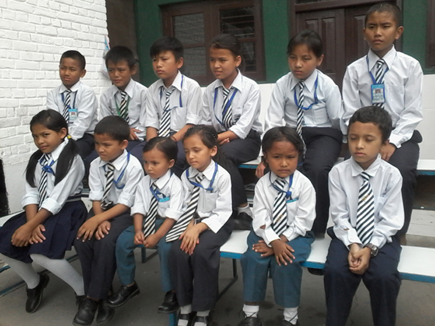

Disabled Rehabilitation Center(DRC)
Introduction
The Disabled Rehabilitation Centre Nepal was established in 2002 as a non profit and Non Government Organisation (NGO). Many of the founding members were people who had physical disabilities themselves. DRC Nepal is registered with the Chief District Office of Government, Kathmandu, and affiliated with the Social Welfare Council under the Ministry of Social Welfare.

At DRC 55 children are living and getting education, health care, therapy and a Familiar home. Here are children with physically disabilities or coming from extremely poor families. This mix of disabled and non-disabled children is a great benefit for all.
Chick here (w3 School)